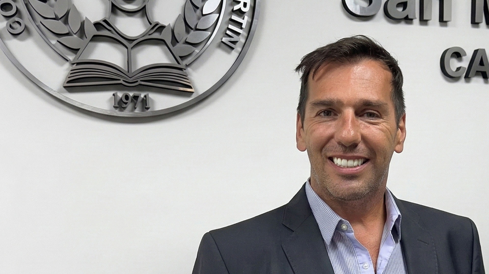
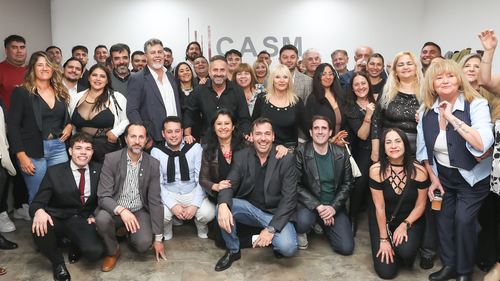
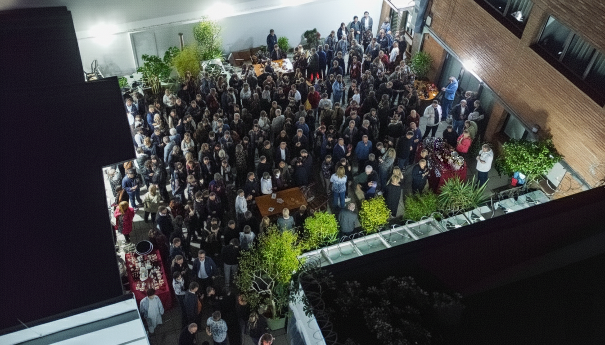
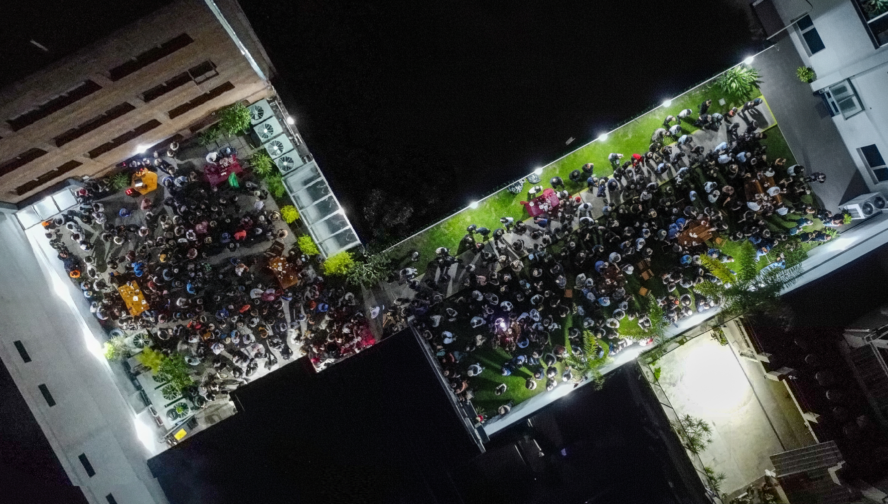
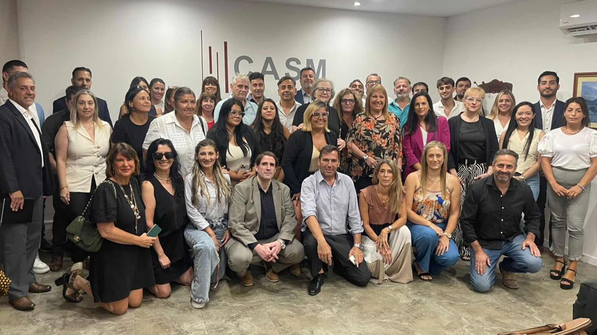

Profesión y matrícula
Pensamos el Colegio desde el ejercicio real de la abogacía y desde las necesidades concretas de quienes sostienen la matrícula todos los días.

Compartimos los mismos desafíos que vos. Defendemos la profesión desde adentro.

Después de 16 años de lo mismo, es tiempo de un Colegio que vuelva a estar al servicio de la matrícula.

Propuestas concretas para defender honorarios, mejorar servicios, fortalecer la capacitación y volver a poner al Colegio del lado de quienes ejercen la profesión.
Somos abogados y abogadas que ejercemos la profesión todos los días. Por eso venimos a mejorar la vida profesional de quienes la ejercen, con una agenda concreta: mejores servicios, defensa gremial, capacitación de calidad, transparencia y una gestión capaz de ordenar, escuchar y dar respuestas.
Nuestro espacio reúne trayectorias, experiencias y sensibilidades diversas. Esa pluralidad no nos divide: nos fortalece. Porque, más allá de los matices, nos une una misma convicción: trabajar con seriedad, cercanía y compromiso para abrir una nueva etapa en el Colegio y poner nuevamente al profesional en el centro.
Pensamos el Colegio desde el ejercicio real de la abogacía y desde las necesidades concretas de quienes sostienen la matrícula todos los días.
Proponemos una agenda clara, prioridades concretas y una gestión que ordene, escuche y transforme demandas en respuestas.
Defendemos el valor del trabajo profesional, las incumbencias y el rol institucional del Colegio como respaldo real para la abogacía.
Apostamos a una etapa de mayor apertura, pluralidad y control institucional, con una lógica moderna y una conducción cercana.
Defensa gremial real, respaldo al cobro de honorarios y acción concreta frente a abusos e incumplimientos.
Acompañamiento institucional, protocolo de actuación y herramientas concretas para defender honorarios con seriedad.
Ver propuestaClínicas, modelos y herramientas listas para ejecutar honorarios con menos desgaste y más resultados.
Ver propuestaRespaldo institucional, acciones formales y capacitación gratuita para defender al mediador y su honorario.
Ver propuestaDefensa rápida, técnica y permanente frente al ejercicio ilegal y el avance sobre incumbencias profesionales.
Ver propuestaDatos, informes y evidencia técnica para denunciar demoras, arbitrariedades y recortes sobre honorarios.
Ver propuestaMás soluciones concretas, menos burocracia: servicios útiles para mejorar el ejercicio profesional cotidiano.
Espacios útiles, funcionales y recuperados para trabajar mejor dentro del Colegio.
Ver propuestaUna solución concreta para facilitar el acceso diario al Colegio y a tribunales.
Ver propuestaUna app del Colegio para hacer trámites, pagos y seguimientos desde el celular.
Ver propuestaTrámites y gestiones en un solo lugar, con menos vueltas y más respuesta.
Ver propuestaBeneficios actuales y concretos para aliviar gastos reales del ejercicio y de la vida cotidiana.
Ver propuestaUn Colegio más cercano, accesible y presente en la realidad cotidiana de quienes ejercen.
Servicios y orientación cerca de donde viven y trabajan los matriculados.
Ver propuestaFinanciamiento y bonificaciones para que el costo del token no sea una barrera de ingreso.
Ver propuestaFacilidades concretas para acceder a equipamiento básico y ejercer en condiciones reales.
Ver propuestaUna alternativa formal y accesible para simplificar el proceso de matriculación.
Ver propuestaSesiones relevantes en vivo para abrir el debate y elevar la calidad institucional.
Ver propuestaCapacitación útil, actual y conectada con la práctica real del ejercicio profesional.
Formación de calidad, práctica y compatible con la realidad laboral de la matrícula.
Ver propuestaMás herramientas, mejores procesos y acceso más parejo a la tecnología aplicada al derecho.
Ver propuestaAcompañamiento ético y práctico para los primeros pasos del ejercicio profesional.
Ver propuestaComunicación, organización y posicionamiento profesional con criterio ético y utilidad real.
Ver propuestaTalleres, guías y formación práctica para bajar errores, frustraciones y tiempos perdidos.
Ver propuestaRecursos mejor usados, reglas claras y una institución abierta, controlable y participativa.
Menos gasto improductivo y más recursos puestos al servicio de la matrícula.
Ver propuestaMás transparencia y participación real en las decisiones que definen prioridades y presupuesto.
Ver propuestaInformación clara y acompañamiento real para entender aportes, sistema y proyección previsional.
Ver propuestaParticipación activa del Colegio en los debates sobre la Caja y el sistema previsional.
Ver propuestaAlternancia real, más control y una institución con reglas claras y vida democrática.
Ver propuestaMás comunidad, más vínculos y una vida colegial que acompañe de verdad el ejercicio profesional.
Actividades y espacios compartidos para fortalecer vínculos, pertenencia y calidad de vida.
Ver propuestaEncuentros reales entre colegas para intercambiar, derivar, aprender y trabajar mejor.
Ver propuestaHerramientas y acompañamiento para gestionar estrés, tiempos, conflictos y desgaste profesional.
Ver propuestaMás presencia, más legitimidad y una abogacía conectada con la comunidad y el acceso a justicia.
Ver propuestaAgenda, coordinación y resultados visibles para que la participación deje de ser decorativa.
Ver propuestaNací y me crié en José C. Paz. Estudié en la UBA con esfuerzo, soy la primera generación de profesionales de mi familia y construí mi camino desde abajo, como tantos colegas que saben lo que cuesta ejercer de verdad.
Llevo 22 años de matrícula, y sé lo que significa abrirse paso, sostener el estudio, cobrar honorarios y defender la profesión todos los días.
También conozco el Colegio desde adentro. Y justamente por eso vi con claridad cómo, con el tiempo, se fue alejando de las necesidades reales de la matrícula.
Esa experiencia me llevó a tomar una decisión: dar un paso al frente y liderar una nueva etapa de cambio, renovación y compromiso con los abogados y las abogadas.
Entrevistas, coberturas y publicaciones sobre el crecimiento del espacio, sus referentes y el escenario electoral en el Colegio de Abogados de San Martín.

La candidatura de Roberto Amantía fue presentada oficialmente como parte del lanzamiento electoral de Abogacía Activa, un espacio que propone una nueva etapa para el Colegio de Abogados de San Martín.
Leer nota destacada
El espacio presentó su campaña para disputar la conducción del Colegio de Abogados de San Martín.
Leer nota
Cobertura del lanzamiento del espacio y del nuevo escenario electoral en el Colegio de San Martín.
Leer nota
Un importante encuentro de la matrícula marcó el surgimiento de una nueva alternativa dentro del Colegio.
Leer nota
La aparición de Abogacía Activa empieza a modificar el mapa político del Colegio de Abogados.
Leer notaEl nuevo espacio abre una disputa por la conducción del Colegio de Abogados de San Martín.
Leer notaLa conformación de una alternativa opositora empieza a reorganizar el escenario electoral.
Leer nota
El escenario político del Colegio de San Martín se tensiona con la aparición de una nueva alternativa.
Leer notaUna fuerte convocatoria acompañó el lanzamiento del nuevo espacio dentro del Colegio de Abogados.
Leer nota
Réplica periodística sobre la interna y el nuevo escenario de poder en el Colegio de San Martín.
Leer notaDeclaraciones sobre construcción colectiva, unidad y proyección institucional dentro del espacio.
Leer notaLa crisis en la conducción institucional reconfigura el panorama electoral del Colegio de San Martín.
Leer notaSi querés participar, acercar una propuesta o recibir información del espacio, escribinos.